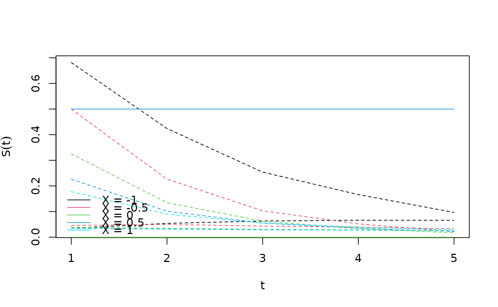

Regression standardization in Cox proportional hazards models
Source:R/coxph_methods.R
standardize_coxph.Rdstandardize_coxph performs regression standardization in Cox proportional
hazards models at specified values of the exposure over the sample
covariate distribution. Let \(T\), \(X\), and \(Z\) be the survival
outcome, the exposure, and a vector of covariates, respectively.
standardize_coxph fits a Cox proportional hazards model and the Breslow estimator
of the baseline hazard in order to estimate the
standardized survival function \(\theta(t,x)=E\{S(t|X=x,Z)\}\), where
\(t\) is a specific value of \(T\), \(x\) is a specific value of
\(X\), and the expectation is over the marginal distribution of \(Z\).
Usage
standardize_coxph(
formula,
data,
values,
times,
clusterid,
ci_level = 0.95,
ci_type = "plain",
contrasts = NULL,
family = "gaussian",
reference = NULL,
transforms = NULL
)Arguments
- formula
The formula which is used to fit the model for the outcome.
- data
The data.
- values
A named list or data.frame specifying the variables and values at which marginal means of the outcome will be estimated.
- times
A vector containing the specific values of \(T\) at which to estimate the standardized survival function.
- clusterid
An optional string containing the name of a cluster identification variable when data are clustered.
- ci_level
Coverage probability of confidence intervals.
- ci_type
A string, indicating the type of confidence intervals. Either "plain", which gives untransformed intervals, or "log", which gives log-transformed intervals.
- contrasts
A vector of contrasts in the following format: If set to
"difference"or"ratio", then \(\psi(x)-\psi(x_0)\) or \(\psi(x) / \psi(x_0)\) are constructed, where \(x_0\) is a reference level specified by thereferenceargument. Has to beNULLif no references are specified.- family
The family argument which is used to fit the glm model for the outcome.
- reference
A vector of reference levels in the following format: If
contrastsis notNULL, the desired reference level(s). This must be a vector or list the same length ascontrasts, and if not named, it is assumed that the order is as specified in contrasts.- transforms
A vector of transforms in the following format: If set to
"log","logit", or"odds", the standardized mean \(\theta(x)\) is transformed into \(\psi(x)=log\{\theta(x)\}\), \(\psi(x)=log[\theta(x)/\{1-\theta(x)\}]\), or \(\psi(x)=\theta(x)/\{1-\theta(x)\}\), respectively. If the vector isNULL, then \(\psi(x)=\theta(x)\).
Value
An object of class std_surv.
This is basically a list with components estimates and covariance estimates in res
Results for transformations, contrasts, references are stored in res_contrasts.
The output contains estimates for contrasts and confidence intervals for all
combinations of transforms and reference levels.
Obtain numeric results in a data frame with the tidy function.
Details
standardize_coxph fits the Cox proportional hazards model
$$\lambda(t|X,Z)=\lambda_0(t)exp\{h(X,Z;\beta)\}$$.
Breslow's estimator of the cumulative baseline hazard
\(\Lambda_0(t)=\int_0^t\lambda_0(u)du\) is used together with the partial
likelihood estimate of \(\beta\) to obtain estimates of the survival
function \(S(t|X=x,Z)\):
$$\hat{S}(t|X=x,Z)=exp[-\hat{\Lambda}_0(t)exp\{h(X=x,Z;\hat{\beta})\}].$$
For each \(t\) in the t argument and for each \(x\) in the
x argument, these estimates are averaged across all subjects (i.e.
all observed values of \(Z\)) to produce estimates
$$\hat{\theta}(t,x)=\sum_{i=1}^n \hat{S}(t|X=x,Z_i)/n,$$ where \(Z_i\)
is the value of \(Z\) for subject \(i\), \(i=1,...,n\). The variance
for \(\hat{\theta}(t,x)\) is obtained by the sandwich formula.
Note
Standardized survival functions are sometimes referred to as (direct) adjusted survival functions in the literature.
standardize_coxph/standardize_parfrailty does not currently handle time-varying exposures or
covariates.
standardize_coxph/standardize_parfrailty internally loops over all values in the t argument.
Therefore, the function will usually be considerably faster if
length(t) is small.
The variance calculation performed by standardize_coxph does not condition on
the observed covariates \(\bar{Z}=(Z_1,...,Z_n)\). To see how this
matters, note that
$$var\{\hat{\theta}(t,x)\}=E[var\{\hat{\theta}(t,x)|\bar{Z}\}]+var[E\{\hat{\theta}(t,x)|\bar{Z}\}].$$
The usual parameter \(\beta\) in a Cox proportional hazards model does not
depend on \(\bar{Z}\). Thus, \(E(\hat{\beta}|\bar{Z})\) is independent
of \(\bar{Z}\) as well (since \(E(\hat{\beta}|\bar{Z})=\beta\)), so that
the term \(var[E\{\hat{\beta}|\bar{Z}\}]\) in the corresponding variance
decomposition for \(var(\hat{\beta})\) becomes equal to 0. However,
\(\theta(t,x)\) depends on \(\bar{Z}\) through the average over the
sample distribution for \(Z\), and thus the term
\(var[E\{\hat{\theta}(t,x)|\bar{Z}\}]\) is not 0, unless one conditions on
\(\bar{Z}\). The variance calculation by Gail and Byar (1986) ignores this
term, and thus effectively conditions on \(\bar{Z}\).
References
Chang I.M., Gelman G., Pagano M. (1982). Corrected group prognostic curves and summary statistics. Journal of Chronic Diseases 35, 669-674.
Gail M.H. and Byar D.P. (1986). Variance calculations for direct adjusted survival curves, with applications to testing for no treatment effect. Biometrical Journal 28(5), 587-599.
Makuch R.W. (1982). Adjusted survival curve estimation using covariates. Journal of Chronic Diseases 35, 437-443.
Sjolander A. (2016). Regression standardization with the R-package stdReg. European Journal of Epidemiology 31(6), 563-574.
Sjolander A. (2016). Estimation of causal effect measures with the R-package stdReg. European Journal of Epidemiology 33(9), 847-858.
Examples
require(survival)
set.seed(7)
n <- 300
Z <- rnorm(n)
X <- rnorm(n, mean = Z)
T <- rexp(n, rate = exp(X + Z + X * Z)) # survival time
C <- rexp(n, rate = exp(X + Z + X * Z)) # censoring time
U <- pmin(T, C) # time at risk
D <- as.numeric(T < C) # event indicator
dd <- data.frame(Z, X, U, D)
fit.std <- standardize_coxph(
formula = Surv(U, D) ~ X + Z + X * Z,
data = dd,
values = list(X = seq(-1, 1, 0.5)),
times = 1:5
)
print(fit.std)
#>
#> Formula: Surv(U, D) ~ X + Z + X * Z
#> Exposure:
#> Survival functions evaluated at t = 1
#>
#> Estimate Std.Error lower.0.95 upper.0.95
#> 1 0.708 0.0479 0.614 0.802
#> 2 0.563 0.0514 0.462 0.663
#> 3 0.426 0.0427 0.343 0.510
#> 4 0.340 0.0391 0.264 0.417
#> 5 0.291 0.0389 0.214 0.367
#>
#>
#> Formula: Surv(U, D) ~ X + Z + X * Z
#> Exposure:
#> Survival functions evaluated at t = 2
#>
#> Estimate Std.Error lower.0.95 upper.0.95
#> 1 0.469 0.0679 0.336 0.602
#> 2 0.320 0.0493 0.223 0.416
#> 3 0.238 0.0366 0.166 0.309
#> 4 0.201 0.0342 0.134 0.268
#> 5 0.183 0.0339 0.117 0.250
#>
#>
#> Formula: Surv(U, D) ~ X + Z + X * Z
#> Exposure:
#> Survival functions evaluated at t = 3
#>
#> Estimate Std.Error lower.0.95 upper.0.95
#> 1 0.372 0.0694 0.2357 0.508
#> 2 0.241 0.0448 0.1531 0.329
#> 3 0.184 0.0342 0.1168 0.251
#> 4 0.162 0.0323 0.0988 0.225
#> 5 0.153 0.0322 0.0898 0.216
#>
#>
#> Formula: Surv(U, D) ~ X + Z + X * Z
#> Exposure:
#> Survival functions evaluated at t = 4
#>
#> Estimate Std.Error lower.0.95 upper.0.95
#> 1 0.253 0.0671 0.1216 0.385
#> 2 0.157 0.0399 0.0791 0.235
#> 3 0.128 0.0320 0.0655 0.191
#> 4 0.121 0.0305 0.0611 0.181
#> 5 0.120 0.0305 0.0602 0.180
#>
#>
#> Formula: Surv(U, D) ~ X + Z + X * Z
#> Exposure:
#> Survival functions evaluated at t = 5
#>
#> Estimate Std.Error lower.0.95 upper.0.95
#> 1 0.0867 0.0439 0.00071 0.173
#> 2 0.0572 0.0274 0.00350 0.111
#> 3 0.0588 0.0255 0.00871 0.109
#> 4 0.0658 0.0261 0.01468 0.117
#> 5 0.0735 0.0270 0.02055 0.126
#>
plot(fit.std)

tidy(fit.std)
#> Estimate Std.Error lower.0.95 upper.0.95 time contrast transform
#> 1 0.70832013 0.04788682 0.6144636987 0.8021766 1 none identity
#> 2 0.56253068 0.05140314 0.4617823736 0.6632790 1 none identity
#> 3 0.42635073 0.04270750 0.3426455704 0.5100559 1 none identity
#> 4 0.34018151 0.03910234 0.2635423246 0.4168207 1 none identity
#> 5 0.29055009 0.03887468 0.2143571129 0.3667431 1 none identity
#> 6 0.46904728 0.06794686 0.3358738807 0.6022207 2 none identity
#> 7 0.31961961 0.04932973 0.2229351222 0.4163041 2 none identity
#> 8 0.23755590 0.03663244 0.1657576343 0.3093542 2 none identity
#> 9 0.20112962 0.03418233 0.1341334831 0.2681257 2 none identity
#> 10 0.18344725 0.03394553 0.1169152459 0.2499793 2 none identity
#> 11 0.37176776 0.06942877 0.2356898753 0.5078457 3 none identity
#> 12 0.24096667 0.04482835 0.1531047262 0.3288286 3 none identity
#> 13 0.18384698 0.03421575 0.1167853377 0.2509086 3 none identity
#> 14 0.16209854 0.03231348 0.0987652793 0.2254318 3 none identity
#> 15 0.15291573 0.03219090 0.0898227374 0.2160087 3 none identity
#> 16 0.25308932 0.06708973 0.1215958627 0.3845828 4 none identity
#> 17 0.15727786 0.03988239 0.0791098205 0.2354459 4 none identity
#> 18 0.12816207 0.03197123 0.0654996093 0.1908245 4 none identity
#> 19 0.12080596 0.03047257 0.0610808163 0.1805311 4 none identity
#> 20 0.11984717 0.03045125 0.0601638067 0.1795305 4 none identity
#> 21 0.08670305 0.04387477 0.0007100907 0.1726960 5 none identity
#> 22 0.05719768 0.02739841 0.0034977909 0.1108976 5 none identity
#> 23 0.05876042 0.02553798 0.0087069008 0.1088139 5 none identity
#> 24 0.06577534 0.02606825 0.0146825001 0.1168682 5 none identity
#> 25 0.07347753 0.02700294 0.0205527416 0.1264023 5 none identity